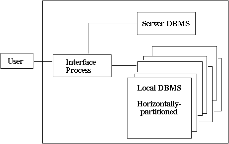

(87) Parallel Database Management System : Kappa (KLIC
version)
Machine: UNIX machine
Environment: UNIX, KLIC
Language: KL1, C
Source Code: 6 MB
Documents: Manual (English / Japanese )
Overview
Kappa is a parallel database management system based on a nested
relational model, and runs on UNIX machines with KLIC.
Configuration

Function
- Nested Relational Model
- The data model of Kappa is based on a nested relational model so
that complex structured data of knowledge information processing
systems or genetic information processing systems can be treated
efficiently.
- Parallel Processing Depending on Data Placement
- As Kappa has a query processing capability at each node, the
distribution of relations and the horizontal partition of relations
give us inter-node parallelism.
- Running on UNIX machines with KLIC
- Kappa is written in KL1 and runs on parallel and/or distributed
environments of computer systems with basic functions of UNIX
operating system using KLIC.
- An Application Program Irpr
- A personel management system, so-called irpr, is included as
an application example.
FTP
- README.
- Parallel Database Management System : Kappa (KLIC version) [765K]

www-admin@icot.or.jp